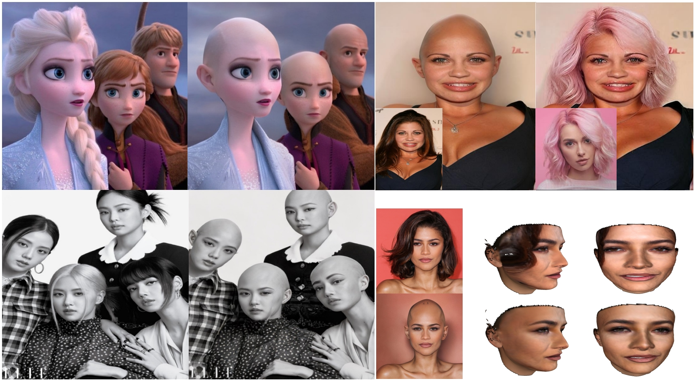
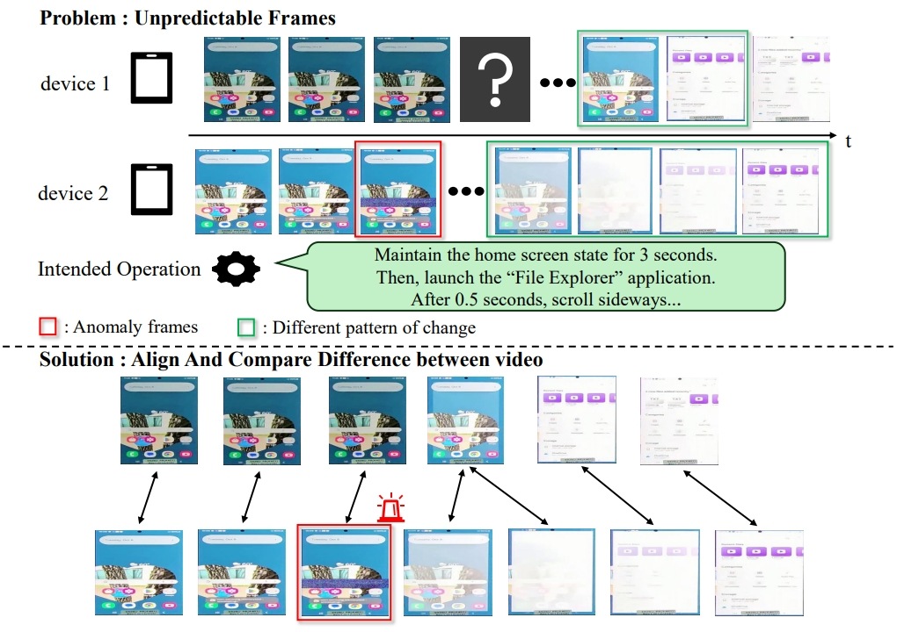

|
Yongjun Choi
M.S. Student at UNIST
3D Scene Understanding
Generative Model
Video Understanding
Vision-Language Model
Audio-Visual Modeling
Hello! I am a master's student in the
3D Vision & Robotics Lab at UNIST,
advised by Prof. Kyungdon Joo. Contact: ccyjun123@unist.ac.kr |
{kind=link}
Publications |
|

AnyBald: Toward Realistic Diffusion-Based Hair Removal In-the-Wild
Yongjun Choi*, Seungoh Han*, Soomin Kim, Sumin Son, Mohsen Rohani, Edgar Maucourant, Dongbo Min, Kyungdon Joo
ACCEPTED
WACV 2026
*Equal contribution
|
|
|

RAC-VAD: Reference-Guided Temporal Alignment and Pairwise Comparison for Video Anomaly Detection in Display Inspection
Yongjun Choi, Gyeongsu Cho, Jinhyeok Kim, Changsu Ha, Sanggyu Biern, Kyungdon Joo
UNDER REVIEW
IEEE TCSVT
|
|

Demonstrating a Vision-Based AI Robot for Strategic Board Games
Taehwan Kim*, Dokeun Lee*, Seonghyeon Kim*, Yongjun Choi*, Sungjun Heo, Thi Thuy Ngan Duong, Kyungdon Joo, Namhun Kim, Jeong hwan Jeon, Hyemin Ahn
Technical Report
*Equal contribution
|
Selected Projects |

Realistic Hair Removal and Reconstruction in Images
2025
Research project (Working with Modiface)
|
|
|
Detecting Anomalies from normal videos
2024
Industrial project (funded by Samsung Electronics)
|
|

Gomoku AI: Demonstrating a Vision-Based AI Robot for Strategic Board Games
2024
HRI course final project
|
|
|
Lang-Grouping: Object-centric semantic grouping for better understanding 3D scenes
2024
3D vision course final project · Apr – Jun 2024
|
Experience |
|
Visiting Student
University of Toronto
Jan 2025 – Jun 2025
Teaching Assistant
UNIST
Jul 2024 – Dec 2024
Research Assistant
3D Vision & Robotics Lab, UNIST
Mar 2024 – Aug 2026
Software Developer Intern
Jun 2023 – Aug 2023
Undergraduate Research Intern
Computer Vision Lab, University of Seoul
Apr 2022 – Jul 2023
|
Awards & Honors
Scholarships
|
Education
|
|
© 2025 Yongjun Choi. All rights reserved. |